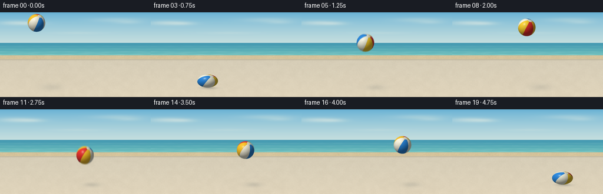
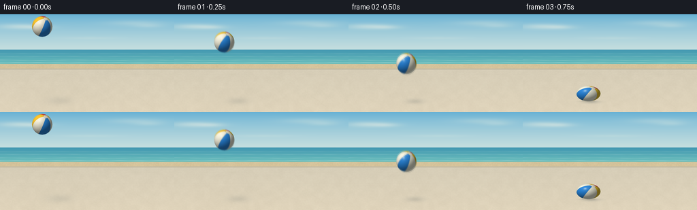

CODING AGENTS AS PIXEL WORLD MODELS
traex/GPT-6.1-Sol · mechanics_0040
点击播放 · 原生 RGB 像素
逐轮保存的候选
回放视频、检查图与代码变化。
每份候选均可单独播放。实际图片检查记录在下方工具轨迹中。
候选 01播放与检查图
点击播放 · 原生 RGB 像素


展开代码变化
--- 上一保存版本
+++ 本次保存版本
@@ -0,0 +1,209 @@
+from pathlib import Path
+import json
+import math
+import numpy as np
+from PIL import Image, ImageDraw, ImageFilter
+import artifact_io
+
+ROOT = Path(__file__).resolve().parent
+SPEC = json.loads((ROOT / 'task_spec.json').read_text())
+W, H = SPEC['width'], SPEC['height']
+S = 4
+WW, HH = W*S, H*S
+rng = np.random.default_rng(47)
+Y, X = np.mgrid[0:HH, 0:WW].astype(np.float32)
+X = (X+.5)/S
+Y = (Y+.5)/S
+
+def soft_noise(cols, rows, amp):
+ data = rng.integers(0, 256, (rows,cols), dtype=np.uint8)
+ layer = Image.fromarray(data).resize((WW,HH), Image.Resampling.BICUBIC)
+ return (np.asarray(layer).astype(np.float32)/255-.5)*amp
+
+# A quiet, sunlit seaside terrace. The ground is a solid, pale sandy stone,
+# rather than loose sand, making the energetic rubber-ball rebound credible.
+bg = np.zeros((HH, WW, 3), np.float32)
+sky_top = np.array([101,176,212], np.float32)
+sky_low = np.array([211,229,224], np.float32)
+f = np.clip(Y/62,0,1)[...,None]**.74
+bg[:] = sky_top*(1-f)+sky_low*f
+# Soft sunlit cloud wisps, kept behind the action.
+cloud = np.zeros((HH,WW),np.float32)
+for cx,cy,rx,ry,a in [(29,18,32,4,.38),(56,19,20,3,.24),(199,13,42,4,.22),(218,17,21,3,.18),(132,35,43,2,.12)]:
+ cloud += a*np.exp(-((X-cx)/rx)**2-((Y-cy)/ry)**2)
+cloud = np.clip(cloud,0,.55)[...,None]
+bg = bg*(1-cloud)+np.array([249,246,229])*cloud
+
+sea = (Y>=52)&(Y<73)
+v = np.clip((Y-52)/21,0,1)
+sea_col = np.array([66,151,177])[None,None,:]*(1-v[...,None])+np.array([107,190,188])[None,None,:]*v[...,None]
+ripple = np.sin(Y*4.6+np.sin(X*.053)*.6)*1.2 + np.sin(Y*13+X*.16)*.55
+sea_col = sea_col+ripple[...,None]
+bg[sea]=sea_col[sea]
+# Narrow wave crests and the pale line of the shore.
+for yy, wav, opacity in [(57.8,.11,.25),(62.4,.22,.35),(67.5,.28,.6),(71.2,.4,.85)]:
+ crest = np.exp(-((Y-yy-np.sin(X*.058+yy)*wav)/.2)**2)
+ crest *= (.6+.4*np.sin(X*.105+yy)**2)
+ a = crest[...,None]*opacity
+ bg = bg*(1-a)+np.array([231,245,234])*a
+beach = (Y>=73)&(Y<81)
+sand = np.zeros_like(bg)+np.array([213,195,155])
+sand += (soft_noise(200,110,5)+soft_noise(35,22,4))[...,None]
+bg[beach]=sand[beach]
+# Paving receives a subtle perspective texture, warm sunlight, and fine grit.
+ground = Y>=81
+g = np.clip((Y-81)/63,0,1)
+stone = np.array([214,205,183])[None,None,:]*(1-g[...,None])+np.array([224,212,187])[None,None,:]*g[...,None]
+tex = soft_noise(35,22,3.3)+soft_noise(160,100,2.8)+soft_noise(WW,HH,2.1)
+stone = stone+tex[...,None]
+# Pale expansion joints: geometric cues for a single flat, hard surface.
+for yy in [89.1,105.5,139.5]:
+ dist = np.abs(Y-yy)
+ line = np.exp(-(dist/.23)**2)*3.8
+ lip = np.exp(-((Y-yy-.38)/.26)**2)*2
+ stone += (lip-line)[...,None]
+for k in [-2.3,1.35]:
+ xx = 127+k*(Y-65)
+ dist = np.abs(X-xx)/math.sqrt(1+k*k)
+ stone -= (np.exp(-(dist/.2)**2)*3)[...,None]
+bg[ground]=stone[ground]
+# A thin warm curb separates the paving from the distant beach.
+curb=(Y>=79.8)&(Y<81.5)
+bg[curb]=np.array([196,187,164])+tex[curb,None]*.3
+bg=np.clip(bg,0,255).astype(np.uint8)
+bg=np.asarray(Image.fromarray(bg).filter(ImageFilter.GaussianBlur(.55)),dtype=np.float32)
+
+# Motion is piecewise ballistic. First downward throw, then elastic impacts
+# at .75s, 3.0s, and 4.75s, all deliberately sampled at this video's 4 fps.
+R = 15.0
+FLOOR = 128.0
+REST = FLOOR-R
+GRAV = 140.0
+
+def motion(t):
+ if t <= .75:
+ z = 95 - (95/.75-GRAV*.75/2)*t-GRAV*t*t/2
+ velocity = -(95/.75-GRAV*.75/2)-GRAV*t
+ elif t <= 3:
+ u=t-.75
+ z=157.5*u-GRAV*u*u/2
+ velocity=157.5-GRAV*u
+ else:
+ u=t-3
+ z=122.5*u-GRAV*u*u/2
+ velocity=122.5-GRAV*u
+ if t<=.75:
+ cx=62+46*t
+ elif t<=3:
+ cx=96.5+24*(t-.75)
+ else:
+ cx=150.5+21*(t-3)
+ dt=min(abs(t-.75),abs(t-3),abs(t-4.75))
+ compression=.25*math.exp(-(dt/.047)**2)
+ # Very slight extension in fast flight, then broad elastic flattening.
+ stretch=.025*min(abs(velocity)/180,1)*(1-math.exp(-(dt/.075)**2))
+ ry=R*(1-compression+stretch)
+ rx=R*(1+.18*math.exp(-(dt/.047)**2)-stretch*.5)
+ cy=REST-max(0,z)+(R-ry)*math.exp(-(dt/.07)**2)
+ return cx,cy,rx,ry,max(0,z),velocity
+
+def rotation(t):
+ # A fixed tilted polar axis plus steady spin keeps panel identity coherent.
+ az=.46
+ ax=1.02
+ cz,sz=math.cos(az),math.sin(az)
+ ca,sa=math.cos(ax),math.sin(ax)
+ rz=np.array([[cz,-sz,0],[sz,cz,0],[0,0,1]],np.float32)
+ ra=np.array([[1,0,0],[0,ca,-sa],[0,sa,ca]],np.float32)
+ b=.4+1.65*t
+ cb,sb=math.cos(b),math.sin(b)
+ rb=np.array([[cb,-sb,0],[sb,cb,0],[0,0,1]],np.float32)
+ return rz@ra@rb
+
+PALETTE=np.array([[229,48,44],[247,204,45],[243,242,221],[41,133,218],[244,239,218],[249,193,41]],np.float32)
+light=np.array([-.48,-.66,.58],np.float32)
+light/=np.linalg.norm(light)
+half=light+np.array([0,0,1],np.float32)
+half/=np.linalg.norm(half)
+
+def render(t):
+ canvas=bg.copy()
+ cx,cy,rx,ry,height,vel=motion(t)
+ # Penumbra grows and fades as the ball rises; the shadow remains on the ground.
+ shadow_x=cx+height*.22+4
+ shadow_y=FLOOR+1-height*.018
+ sx=rx*.85+height*.105
+ sy=2.8+height*.047
+ dist=((X-shadow_x)/sx)**2+((Y-shadow_y)/sy)**2
+ alpha=np.exp(-dist*1.55)*(.25/(1+height*.012))
+ alpha*=np.clip((Y-80)*.8,0,1)
+ canvas=canvas*(1-alpha[...,None])+np.array([94,103,104])*alpha[...,None]
+ contact=math.exp(-(height/2.5)**2)
+ d=((X-cx)/(rx*.85))**2+((Y-(FLOOR+.2))/1.05)**2
+ a=np.exp(-d*2)*.27*contact
+ canvas=canvas*(1-a[...,None])+np.array([105,103,88])*a[...,None]
+
+ x0=max(0,int((cx-rx-1)*S)); x1=min(WW,int((cx+rx+1)*S)+1)
+ y0=max(0,int((cy-ry-1)*S)); y1=min(HH,int((cy+ry+1)*S)+1)
+ xx=(X[y0:y1,x0:x1]-cx)/rx
+ yy=(Y[y0:y1,x0:x1]-cy)/ry
+ rr=xx*xx+yy*yy
+ mask=rr<=1
+ zz=np.sqrt(np.maximum(0,1-rr))
+ normals=np.stack([xx,yy,zz],axis=-1)
+ local=normals@rotation(t)
+ longitude=np.arctan2(local[...,1],local[...,0])
+ latitude=local[...,2]
+ q=(longitude+np.pi)/(2*np.pi)*6
+ indices=np.floor(q).astype(int)%6
+ color=PALETTE[indices].copy()
+ # Narrow heat-welded panel seams, not thick illustrated outlines.
+ seam_dist=np.minimum(q%1,1-q%1)
+ seam_width=.014/np.maximum(np.sqrt(np.maximum(0,1-latitude*latitude)),.2)
+ seam=np.exp(-(seam_dist/seam_width)**2)
+ color*=1-.13*seam[...,None]
+ near=np.exp(-((seam_dist-seam_width*1.5)/(seam_width*.5))**2)
+ color+=near[...,None]*3
+ # Small white valve/pole disk, anchored on the rotating sphere.
+ cap=(latitude>.971)
+ color[cap]=np.array([240,235,211])
+ cap_edge=np.exp(-((latitude-.97)/.0045)**2)
+ color*=1-.12*cap_edge[...,None]
+ # Lambertian body with soft environment illumination and a glossy rubber sheen.
+ nl=np.maximum(0,normals@light)
+ shade=.43+.57*nl
+ shade+=zz*.055
+ color*=shade[...,None]
+ spec=np.maximum(0,normals@half)
+ broad=spec**22*.14
+ sharp=spec**140*.48
+ color=color*(1-broad[...,None])+np.array([255,248,229])*broad[...,None]
+ color=color*(1-sharp[...,None])+np.array([255,255,249])*sharp[...,None]
+ rim=(1-zz)**3*.17
+ color=color*(1-rim[...,None])+np.array([153,202,214])*rim[...,None]
+ # Faint fine rubber texture without changing the underlying colored panels.
+ grain=np.sin(local[...,0]*220+local[...,2]*61)*np.sin(local[...,1]*193)*.35
+ color+=grain[...,None]
+ color=np.clip(color,0,255)
+ region=canvas[y0:y1,x0:x1]
+ region[mask]=color[mask]
+ return canvas
+
+frames=[]
+for i in range(SPEC['frames']):
+ t=i/SPEC['fps']
+ # Short shutter time: enough to suggest the throw, without ghosted balls.
+ if min(abs(t-.75),abs(t-3),abs(t-4.75)) < .02 or i==0:
+ rendered=render(t)
+ else:
+ rendered=.2*render(t-.012)+.6*render(t)+.2*render(t+.012)
+ im=Image.fromarray(np.clip(rendered,0,255).astype(np.uint8))
+ im=im.resize((W,H),Image.Resampling.LANCZOS)
+ frames.append(np.asarray(im,dtype=np.uint8))
+frames=np.stack(frames)
+artifact_io.save(frames,ROOT)
+print(f'Saved {frames.shape[0]} RGB frames, {W}x{H}, {SPEC["fps"]} fps.')
+print('Ball center / height:')
+for i in range(len(frames)):
+ state=motion(i/SPEC['fps'])
+ print(i,tuple(round(x,2) for x in state[:5]))
可观测工具轨迹
实际执行的命令与返回图片。
命令 1exit 0
/bin/bash -lc "ls -la && cat prompt.txt && printf '\\n---RULES---\\n' && cat GENERATION_RULES.md && printf '\\n---SPEC---\\n' && cat task_spec.json"
命令 2exit 0
/bin/bash -lc "cat artifact_io.py && python - <<'PY'
import numpy,PIL
print('numpy',numpy.__version__,'PIL',PIL.__version__)
PY"命令 3exit 0
/bin/bash -lc "cat > generate.py <<'PY'
from pathlib import Path
import json
import math
import numpy as np
from PIL import Image, ImageDraw, ImageFilter
import artifact_io
ROOT = Path(__file__).resolve().parent
SPEC = json.loads((ROOT / 'task_spec.json').read_text())
W, H = SPEC['width'], SPEC['height']
S = 4
WW, HH = W*S, H*S
rng = np.random.default_rng(47)
Y, X = np.mgrid[0:HH, 0:WW].astype(np.float32)
X = (X+.5)/S
Y = (Y+.5)/S
def soft_noise(cols, rows, amp):
data = rng.integers(0, 256, (rows,cols), dtype=np.uint8)
layer = Image.fromarray(data).resize((WW,HH), Image.Resampling.BICUBIC)
return (np.asarray(layer).astype(np.float32)/255-.5)*amp
# A quiet, sunlit seaside terrace. The ground is a solid, pale sandy stone,
# rather than loose sand, making the energetic rubber-ball rebound credible.
bg = np.zeros((HH, WW, 3), np.float32)
sky_top = np.array([101,176,212], np.float32)
sky_low = np.array([211,229,224], np.float32)
f = np.clip(Y/62,0,1)[...,None]**.74
bg[:] = sky_top*(1-f)+sky_low*f
# Soft sunlit cloud wisps, kept behind the action.
cloud = np.zeros((HH,WW),np.float32)
for cx,cy,rx,ry,a in [(29,18,32,4,.38),(56,19,20,3,.24),(199,13,42,4,.22),(218,17,21,3,.18),(132,35,43,2,.12)]:
cloud += a*np.exp(-((X-cx)/rx)**2-((Y-cy)/ry)**2)
cloud = np.clip(cloud,0,.55)[...,None]
bg = bg*(1-cloud)+np.array([249,246,229])*cloud
sea = (Y>=52)&(Y<73)
v = np.clip((Y-52)/21,0,1)
sea_col = np.array([66,151,177])[None,None,:]*(1-v[...,None])+np.array([107,190,188])[None,None,:]*v[...,None]
ripple = np.sin(Y*4.6+np.sin(X*.053)*.6)*1.2 + np.sin(Y*13+X*.16)*.55
sea_col = sea_col+ripple[...,None]
bg[sea]=sea_col[sea]
# Narrow wave crests and the pale line of the shore.
for yy, wav, opacity in [(57.8,.11,.25),(62.4,.22,.35),(67.5,.28,.6),(71.2,.4,.85)]:
crest = np.exp(-((Y-yy-np.sin(X*.058+yy)*wav)/.2)**2)
crest *= (.6+.4*np.sin(X*.105+yy)**2)
a = crest[...,None]*opacity
bg = bg*(1-a)+np.array([231,245,234])*a
beach = (Y>=73)&(Y<81)
sand = np.zeros_like(bg)+np.array([213,195,155])
sand += (soft_noise(200,110,5)+soft_noise(35,22,4))[...,None]
bg[beach]=sand[beach]
# Paving receives a subtle perspective texture, warm sunlight, and fine grit.
ground = Y>=81
g = np.clip((Y-81)/63,0,1)
stone = np.array([214,205,183])[None,None,:]*(1-g[...,None])+np.array([224,212,187])[None,None,:]*g[...,None]
tex = soft_noise(35,22,3.3)+soft_noise(160,100,2.8)+soft_noise(WW,HH,2.1)
stone = stone+tex[...,None]
# Pale expansion joints: geometric cues for a single flat, hard surface.
for yy in [89.1,105.5,139.5]:
dist = np.abs(Y-yy)
line = np.exp(-(dist/.23)**2)*3.8
lip = np.exp(-((Y-yy-.38)/.26)**2)*2
stone += (lip-line)[...,None]
for k in [-2.3,1.35]:
xx = 127+k*(Y-65)
dist = np.abs(X-xx)/math.sqrt(1+k*k)
stone -= (np.exp(-(dist/.2)**2)*3)[...,None]
bg[ground]=stone[ground]
# A thin warm curb separates the paving from the distant beach.
curb=(Y>=79.8)&(Y<81.5)
bg[curb]=np.array([196,187,164])+tex[curb,None]*.3
bg=np.clip(bg,0,255).astype(np.uint8)
bg=np.asarray(Image.fromarray(bg).filter(ImageFilter.GaussianBlur(.55)),dtype=np.float32)
# Motion is piecewise ballistic. First downward throw, then elastic impacts
# at .75s, 3.0s, and 4.75s, all deliberately sampled at this video's 4 fps.
R = 15.0
FLOOR = 128.0
REST = FLOOR-R
GRAV = 140.0
def motion(t):
if t <= .75:
z = 95 - (95/.75-GRAV*.75/2)*t-GRAV*t*t/2
velocity = -(95/.75-GRAV*.75/2)-GRAV*t
elif t <= 3:
u=t-.75
z=157.5*u-GRAV*u*u/2
velocity=157.5-GRAV*u
else:
u=t-3
z=122.5*u-GRAV*u*u/2
velocity=122.5-GRAV*u
if t<=.75:
cx=62+46*t
elif t<=3:
cx=96.5+24*(t-.75)
else:
cx=150.5+21*(t-3)
dt=min(abs(t-.75),abs(t-3),abs(t-4.75))
compression=.25*math.exp(-(dt/.047)**2)
# Very slight extension in fast flight, then broad elastic flattening.
stretch=.025*min(abs(velocity)/180,1)*(1-math.exp(-(dt/.075)**2))
ry=R*(1-compression+stretch)
rx=R*(1+.18*math.exp(-(dt/.047)**2)-stretch*.5)
cy=REST-max(0,z)+(R-ry)*math.exp(-(dt/.07)**2)
return cx,cy,rx,ry,max(0,z),velocity
def rotation(t):
# A fixed tilted polar axis plus steady spin keeps panel identity coherent.
az=.46
ax=1.02
cz,sz=math.cos(az),math.sin(az)
ca,sa=math.cos(ax),math.sin(ax)
rz=np.array([[cz,-sz,0],[sz,cz,0],[0,0,1]],np.float32)
ra=np.array([[1,0,0],[0,ca,-sa],[0,sa,ca]],np.float32)
b=.4+1.65*t
cb,sb=math.cos(b),math.sin(b)
rb=np.array([[cb,-sb,0],[sb,cb,0],[0,0,1]],np.float32)
return rz@ra@rb
PALETTE=np.array([[229,48,44],[247,204,45],[243,242,221],[41,133,218],[244,239,218],[249,193,41]],np.float32)
light=np.array([-.48,-.66,.58],np.float32)
light/=np.linalg.norm(light)
half=light+np.array([0,0,1],np.float32)
half/=np.linalg.norm(half)
def render(t):
canvas=bg.copy()
cx,cy,rx,ry,height,vel=motion(t)
# Penumbra grows and fades as the ball rises; the shadow remains on the ground.
shadow_x=cx+height*.22+4
shadow_y=FLOOR+1-height*.018
sx=rx*.85+height*.105
sy=2.8+height*.047
dist=((X-shadow_x)/sx)**2+((Y-shadow_y)/sy)**2
alpha=np.exp(-dist*1.55)*(.25/(1+height*.012))
alpha*=np.clip((Y-80)*.8,0,1)
canvas=canvas*(1-alpha[...,None])+np.array([94,103,104])*alpha[...,None]
contact=math.exp(-(height/2.5)**2)
d=((X-cx)/(rx*.85))**2+((Y-(FLOOR+.2))/1.05)**2
a=np.exp(-d*2)*.27*contact
canvas=canvas*(1-a[...,None])+np.array([105,103,88])*a[...,None]
x0=max(0,int((cx-rx-1)*S)); x1=min(WW,int((cx+rx+1)*S)+1)
y0=max(0,int((cy-ry-1)*S)); y1=min(HH,int((cy+ry+1)*S)+1)
xx=(X[y0:y1,x0:x1]-cx)/rx
yy=(Y[y0:y1,x0:x1]-cy)/ry
rr=xx*xx+yy*yy
mask=rr<=1
zz=np.sqrt(np.maximum(0,1-rr))
normals=np.stack([xx,yy,zz],axis=-1)
local=normals@rotation(t)
longitude=np.arctan2(local[...,1],local[...,0])
latitude=local[...,2]
q=(longitude+np.pi)/(2*np.pi)*6
indices=np.floor(q).astype(int)%6
color=PALETTE[indices].copy()
# Narrow heat-welded panel seams, not thick illustrated outlines.
seam_dist=np.minimum(q%1,1-q%1)
seam_width=.014/np.maximum(np.sqrt(np.maximum(0,1-latitude*latitude)),.2)
seam=np.exp(-(seam_dist/seam_width)**2)
color*=1-.13*seam[...,None]
near=np.exp(-((seam_dist-seam_width*1.5)/(seam_width*.5))**2)
color+=near[...,None]*3
# Small white valve/pole disk, anchored on the rotating sphere.
cap=(latitude>.971)
color[cap]=np.array([240,235,211])
cap_edge=np.exp(-((latitude-.97)/.0045)**2)
color*=1-.12*cap_edge[...,None]
# Lambertian body with soft environment illumination and a glossy rubber sheen.
nl=np.maximum(0,normals@light)
shade=.43+.57*nl
shade+=zz*.055
color*=shade[...,None]
spec=np.maximum(0,normals@half)
broad=spec**22*.14
sharp=spec**140*.48
color=color*(1-broad[...,None])+np.array([255,248,229])*broad[...,None]
color=color*(1-sharp[...,None])+np.array([255,255,249])*sharp[...,None]
rim=(1-zz)**3*.17
color=color*(1-rim[...,None])+np.array([153,202,214])*rim[...,None]
# Faint fine rubber texture without changing the underlying colored panels.
grain=np.sin(local[...,0]*220+local[...,2]*61)*np.sin(local[...,1]*193)*.35
color+=grain[...,None]
color=np.clip(color,0,255)
region=canvas[y0:y1,x0:x1]
region[mask]=color[mask]
return canvas
frames=[]
for i in range(SPEC['frames']):
t=i/SPEC['fps']
# Short shutter time: enough to suggest the throw, without ghosted balls.
if min(abs(t-.75),abs(t-3),abs(t-4.75)) < .02 or i==0:
rendered=render(t)
else:
rendered=.2*render(t-.012)+.6*render(t)+.2*render(t+.012)
im=Image.fromarray(np.clip(rendered,0,255).astype(np.uint8))
im=im.resize((W,H),Image.Resampling.LANCZOS)
frames.append(np.asarray(im,dtype=np.uint8))
frames=np.stack(frames)
artifact_io.save(frames,ROOT)
print(f'Saved {frames.shape[0]} RGB frames, {W}x{H}, {SPEC[\"fps\"]} fps.')
print('Ball center / height:')
for i in range(len(frames)):
state=motion(i/SPEC['fps'])
print(i,tuple(round(x,2) for x in state[:5]))
PY
python generate.py"命令 4exit 2
/bin/bash -lc "python - <<'PY'
from pathlib import Path
import numpy as np
from PIL import Image
p=Path('.')
a=np.load(p/'pixels.npz')['pixels']
assert a.shape==(144,256,20)
for i in range(20):
im=Image.open(p/'frames'/f'{i:02d}.png')
assert im.mode=='RGB' and im.size==(256,144)
assert (p/'index.html').is_file()
print('Validated all 20 RGB frames and required output artifacts.')
PY
if command -v ffmpeg >/dev/null 2>&1; then ffmpeg -hide_banner -loglevel error -y -framerate 4 -i frames/%02d.png -c:v libx264 -preset slow -crf 16 -pix_fmt yuv420p -r 4 -movflags +faststart video.mp4; fi
ls -lh pixels.npz index.html video.mp4 2>/dev/null"保存候选 1 份；完成命令 4 次；可验证图片返回 0 张。原始 API 响应与完整日志保留在本地。